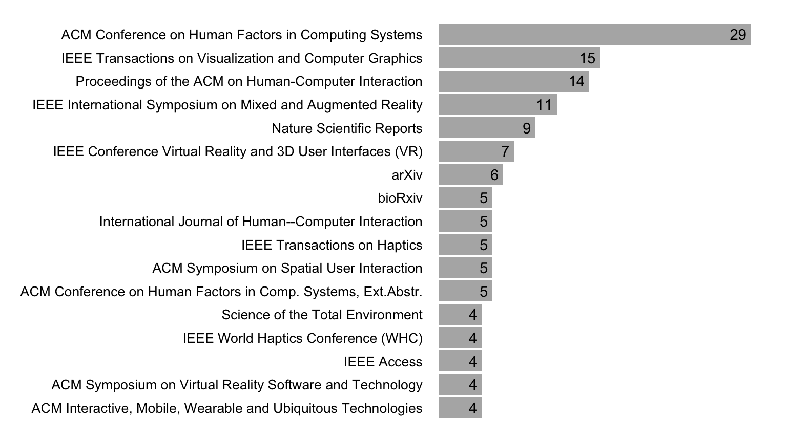

The illusory promise of the Aligned Rank Transform
Theophanis Tsandilas ![]()
Géry Casiez
1 Introduction
We will demonstrate that the aligned rank transform procedure (Higgins, Blair, and Tashtoush 1990; Salter and Fawcett 1993; Wobbrock et al. 2011) is problematic, raising Type I error rates at very high levels for a range of non-normal data distributions. We will show that the more recent implementation of the procedure for contrasts (Elkin et al. 2021) does not address these issues. Although warnings have been raised by other researchers in the past (Luepsen 2017, 2018), those have been largely ignored.
We will also demonstrate that simpler transformation methods exhibit a better behavior, although they have their own limitations. In the light of these new results, we will argue that the aligned rank transform is not a viable analysis method. From now on, researchers should consider the method as obsolete and replace it by better alternatives. Main and interaction effects reported in the past through statistical analyses conducted with the method should not be trusted unless samples came from populations that did not significantly deviate from normal.
Illustrative example
We will start with a concrete example to illustrate how the aligned rank transform can increase false positives and singificantly inflate observed effects. The example will also serve as a quick introduction to key concepts and methods used throughout the paper.
Suppose an HCI researcher conducts an experiment to compare the performance of three user interface techniques (A, B, and C) that help users complete image editing tasks of four different difficulty levels. The experiment is structured using a fully balanced 4 x 3 repeated-measures factorial design, where each participant (N = 12) performs 12 tasks in a unique order. The researcher measures the time that it takes participants to complete each task. The following table presents the experimental results:
Example dataset: Time (in minutes) spent by 12 participants for four difficulty levels and three user interface techniques. Scroll down to see the full results.
| Participant | Difficulty | Technique | Time |
|---|---|---|---|
| P01 | Level1 | A | 0.20 |
| P01 | Level1 | B | 0.17 |
| P01 | Level1 | C | 0.14 |
| P01 | Level2 | A | 0.45 |
| P01 | Level2 | B | 0.50 |
| P01 | Level2 | C | 0.27 |
| P01 | Level3 | A | 0.64 |
| P01 | Level3 | B | 0.63 |
| P01 | Level3 | C | 0.83 |
| P01 | Level4 | A | 0.75 |
| P01 | Level4 | B | 1.35 |
| P01 | Level4 | C | 1.25 |
| P02 | Level1 | A | 0.71 |
| P02 | Level1 | B | 0.47 |
| P02 | Level1 | C | 0.59 |
| P02 | Level2 | A | 1.82 |
| P02 | Level2 | B | 0.87 |
| P02 | Level2 | C | 1.29 |
| P02 | Level3 | A | 1.35 |
| P02 | Level3 | B | 4.44 |
| P02 | Level3 | C | 1.92 |
| P02 | Level4 | A | 3.22 |
| P02 | Level4 | B | 9.62 |
| P02 | Level4 | C | 5.33 |
| P03 | Level1 | A | 0.55 |
| P03 | Level1 | B | 0.21 |
| P03 | Level1 | C | 0.43 |
| P03 | Level2 | A | 0.88 |
| P03 | Level2 | B | 1.07 |
| P03 | Level2 | C | 1.36 |
| P03 | Level3 | A | 0.85 |
| P03 | Level3 | B | 0.66 |
| P03 | Level3 | C | 2.19 |
| P03 | Level4 | A | 3.21 |
| P03 | Level4 | B | 3.44 |
| P03 | Level4 | C | 2.07 |
| P04 | Level1 | A | 0.54 |
| P04 | Level1 | B | 0.41 |
| P04 | Level1 | C | 0.52 |
| P04 | Level2 | A | 1.02 |
| P04 | Level2 | B | 0.61 |
| P04 | Level2 | C | 0.80 |
| P04 | Level3 | A | 2.19 |
| P04 | Level3 | B | 1.75 |
| P04 | Level3 | C | 2.36 |
| P04 | Level4 | A | 9.82 |
| P04 | Level4 | B | 4.32 |
| P04 | Level4 | C | 3.58 |
| P05 | Level1 | A | 0.79 |
| P05 | Level1 | B | 0.78 |
| P05 | Level1 | C | 0.45 |
| P05 | Level2 | A | 2.41 |
| P05 | Level2 | B | 0.99 |
| P05 | Level2 | C | 1.80 |
| P05 | Level3 | A | 2.70 |
| P05 | Level3 | B | 2.85 |
| P05 | Level3 | C | 2.25 |
| P05 | Level4 | A | 3.13 |
| P05 | Level4 | B | 5.38 |
| P05 | Level4 | C | 6.24 |
| P06 | Level1 | A | 0.64 |
| P06 | Level1 | B | 0.23 |
| P06 | Level1 | C | 0.34 |
| P06 | Level2 | A | 0.90 |
| P06 | Level2 | B | 0.93 |
| P06 | Level2 | C | 0.45 |
| P06 | Level3 | A | 1.32 |
| P06 | Level3 | B | 1.34 |
| P06 | Level3 | C | 1.80 |
| P06 | Level4 | A | 5.47 |
| P06 | Level4 | B | 4.64 |
| P06 | Level4 | C | 2.50 |
| P07 | Level1 | A | 0.17 |
| P07 | Level1 | B | 0.17 |
| P07 | Level1 | C | 0.16 |
| P07 | Level2 | A | 0.24 |
| P07 | Level2 | B | 0.30 |
| P07 | Level2 | C | 0.27 |
| P07 | Level3 | A | 0.72 |
| P07 | Level3 | B | 1.30 |
| P07 | Level3 | C | 0.36 |
| P07 | Level4 | A | 1.06 |
| P07 | Level4 | B | 1.01 |
| P07 | Level4 | C | 0.55 |
| P08 | Level1 | A | 0.36 |
| P08 | Level1 | B | 0.38 |
| P08 | Level1 | C | 0.22 |
| P08 | Level2 | A | 0.69 |
| P08 | Level2 | B | 1.02 |
| P08 | Level2 | C | 0.89 |
| P08 | Level3 | A | 0.99 |
| P08 | Level3 | B | 1.75 |
| P08 | Level3 | C | 1.15 |
| P08 | Level4 | A | 3.87 |
| P08 | Level4 | B | 4.63 |
| P08 | Level4 | C | 4.89 |
| P09 | Level1 | A | 0.33 |
| P09 | Level1 | B | 0.24 |
| P09 | Level1 | C | 0.21 |
| P09 | Level2 | A | 0.39 |
| P09 | Level2 | B | 1.01 |
| P09 | Level2 | C | 0.42 |
| P09 | Level3 | A | 0.79 |
| P09 | Level3 | B | 1.17 |
| P09 | Level3 | C | 1.86 |
| P09 | Level4 | A | 3.47 |
| P09 | Level4 | B | 2.86 |
| P09 | Level4 | C | 1.21 |
| P10 | Level1 | A | 0.18 |
| P10 | Level1 | B | 0.24 |
| P10 | Level1 | C | 0.59 |
| P10 | Level2 | A | 0.27 |
| P10 | Level2 | B | 0.77 |
| P10 | Level2 | C | 0.61 |
| P10 | Level3 | A | 1.57 |
| P10 | Level3 | B | 0.90 |
| P10 | Level3 | C | 1.43 |
| P10 | Level4 | A | 4.73 |
| P10 | Level4 | B | 3.71 |
| P10 | Level4 | C | 1.13 |
| P11 | Level1 | A | 0.15 |
| P11 | Level1 | B | 0.57 |
| P11 | Level1 | C | 0.38 |
| P11 | Level2 | A | 1.43 |
| P11 | Level2 | B | 0.39 |
| P11 | Level2 | C | 0.79 |
| P11 | Level3 | A | 1.90 |
| P11 | Level3 | B | 2.14 |
| P11 | Level3 | C | 0.89 |
| P11 | Level4 | A | 3.92 |
| P11 | Level4 | B | 7.19 |
| P11 | Level4 | C | 3.62 |
| P12 | Level1 | A | 0.23 |
| P12 | Level1 | B | 0.41 |
| P12 | Level1 | C | 0.56 |
| P12 | Level2 | A | 1.09 |
| P12 | Level2 | B | 1.06 |
| P12 | Level2 | C | 0.98 |
| P12 | Level3 | A | 1.70 |
| P12 | Level3 | B | 1.39 |
| P12 | Level3 | C | 1.42 |
| P12 | Level4 | A | 3.09 |
| P12 | Level4 | B | 6.24 |
| P12 | Level4 | C | 1.14 |
Although not real, the above dataset is realistic. It has been randomly sampled from a population in which: (1) Difficulty has a large effect; (2) Technique has no effect; and (3) there is no interaction effect between the two factors. To generate time values, we drew samples from a log-normal distribution. The log-normal distribution is often a good fit for real-world measurements that are bounded by zero and have low means but large variance (Limpert, Stahel, and Abbt 2001). Task-completion times are good examples of such measurements.
Figure 1 presents two boxplots that visually summarize the main effects observed through the experiment. We plot medians to account for the fact that distributions are skewed. Notice that time clearly increases with the level of task difficulty. In contrast, although the overall median time is somehow higher for Technique B, given the large spread of the observed values, differences among the three techniques are not visually clear.
To analyze the results, let us conduct a multiverse analysis (Dragicevic et al. 2019), using repeated-measures ANOVA with four different data-transformation methods:
Log transformation (LOG). Data are transformed with the logarithmic function. For our data, we expect this method to give the most reliable results.
Aligned rank transformation (ART). Data are transformed and analyzed with the ARTool (Wobbrock et al. 2011; Elkin et al. 2021).
Pure rank transformation (RNK). Data are transformed with the original rank transformation (Conover and Iman 1981), which does not require any data alignment.
Inverse normal transformation (INT). The data are transformed by using their normal scores. This rank-based method is simple to implement and has been commonly used in some disciplines. However, it has also received criticisms (Beasley, Erickson, and Allison 2009).
For each ANOVA analysis, we use a linear mixed-effects model, treating the participant identifier as a random effect. To simplify our analysis and like Elkin et al. (2021), we consider random intercepts but no random slopes. For example, we use the following R code to create the model for the log-transformed response:
m.log <- lmer(log(Time) ~ Difficulty*Technique + (1|Participant), data = df)The table below presents the p-values for the main effects of the two factors and for their interaction:
| LOG | ART | RNK | INT | |
|---|---|---|---|---|
| Difficulty | \(8.1 \times 10^{-47}\) | \(9.0 \times 10^{-43}\) | \(4.3 \times 10^{-46}\) | \(4.4 \times 10^{-44}\) |
| Technique | \(.18\) | \(.00061\) | \(.38\) | \(.17\) |
| Difficulty \(\times\) Technique | \(.10\) | \(.0017\) | \(.24\) | \(.23\) |
The disparity in findings between ART and the three alternative methods is striking. ART suggests that all three effects are statistically significant. What adds to the intrigue is the fact that ART’s p-values for Technique and its interaction with Difficulty are orders of magnitude lower than the p-values obtained from the other methods. We will observe similar discripancies if we conduct contrast tests with the ART procedure (Elkin et al. 2021), though we leave this as an exercise for the reader.
We also examine effect size measures, which are commonly reported in scientific papers. The table below presents results for partial \(\eta^2\), which describes the ratio of variance explained by a variable or an interaction:
| LOG | ART | RNK | INT | |
|---|---|---|---|---|
| Difficulty | \(.83\ [.79, 1.00]\) | \(.80\ [.76, 1.00]\) | \(.83\ [.79, 1.00]\) | \(.81\ [.77, 1.00]\) |
| Technique | \(.03\ [.00, 1.00]\) | \(.11\ [.03, 1.00]\) | \(.02\ [.00, 1.00]\) | \(.03\ [.00, 1.00]\) |
| Difficulty \(\times\) Technique | \(.08\ [.00, 1.00]\) | \(.16\ [.04, 1.00]\) | \(.06\ [.00, 1.00]\) | \(.06\ [.00, 1.00]\) |
Clearly, ART exagerates the effect of Technique and its interaction with Difficulty.
Overview
The above example does not capture a rare phenomenon. We will show that ART’s error inflation is systematic for a range of distributions that deviate from normality, both continuous and ordinal. We will explain how the problem emerges. We will also see that ART often performs worse than simpler methods that ART is widely considered to repair or improve, such as the pure rank transformation or no transformation at all. Even worse, while the rank transformation has been criticized for inflating errors for interaction only effects, ART inflates errors for both interaction and main effects, as we observed in our example.
2 Background
Non-parametric statistics
Parametric statistical procedures such as ANOVA, are known to be fairly robust to deviations from normality assumptions, and this is especially then case when samples sizes are large. However, in many situations […] (Continue with an overview of assumption violations and non-parametric statistical methods and common tests.)
Rank transformations
Unfortunately, each non-parametric statistical test addresses a specific experimental design. There is no handy test for more complex models such as ones that contain multiple independent variables. Rank transformations (Conover and Iman 1981) (Higgins, Blair, and Tashtoush 1990) (Salter and Fawcett 1993) (Mansouri and Chang 1995) (Beasley, Erickson, and Allison 2009)
Previous warnings
Include here all the background related to the
(Casiez 2022) (Luepsen 2017, 2018)
3 ART’s breakdown across distributions
To better understand the behavior of rank transformation methods, we start with a series of Monte Carlo simulations, focusing on a 4 \(\times\) 3 repeated-measures design, like in our illustrative example. We extend our analysis to other designs in the following section.
Methodology
Model structure. We assume that observations for the response variable \(Y\) come from a two-way balanced mixed effects model with the following form:
\[ y_{ijk} = \mu + s_k + a_1 x_{1i} + a_2 x_{2j} + a_{12} x_{1i} x_{2j} + \epsilon_{ijk} \tag{1}\]
\(\mu\) is the grand mean
\(x_{1i}\) is a numerical coding of the i-th level of factor \(X_1\), where \(i = 1..m_1\)
\(x_{2j}\) is a numerical coding of the j-th level of factor \(X_2\), where \(j = 1..m_2\)
\(a_1\), \(a_2\), and \(a_{12}\) express the magnitude of main and interaction effects
\(s_k\) is the random intercept effect of the k-th subject, where \(k = 1..n\)
\(\epsilon_{ijk}\) is the experimental error effect
We set the levels \(x_{1i} \in X_1\) and \(x_{2j} \in X_2\) to be equidistant, requiring them to sum up to zero (Baguley 2012). For a 4 \(\times\) 3 design (\(m_1 = 4\) and \(m_2 = 3\)), we code \(X_1\) and \(X_2\) as follows: \(X_1 = \{-1.5, -0.5, 0.5, 1.5 \}\) and \(X_2 = \{-1, 0, 1 \}\).
While random slope effects can have an impact on real experimental data (Barr et al. 2013), we do not incorporate them into our simulations for three reasons: (1) to be consistent with previous evaluations of the ART procedure (Elkin et al. 2021); (2) because random slope effects make the control for equal variances and sphericity assumptions more challenging; and (3) because mixed-effects procedures that account for random slope effects are more computationally demanding, adding strain to our simulation resources. However, there is no good reason to believe that adding random slope effects would affect our key findigns and conclusions.
Population control, sampling, and distribution conversions. To simplify our simulations, we fix the following population parameters: \(\mu = 0\), \(\sigma = 1\), and \(\sigma_s = 1\). We then control the magnitude of effects by varying \(a_1\), \(a_2\), and \(a_{12}\).
We follow the approach of DeBruine and Barr (2021) and use the R package faux (DeBruine 2023) to simulate data for our mixed-effects models. As a starting point, we assume that the distributions of random intercepts and errors are normal, or \(s_k \sim N(0,\sigma_s)\) and \(\epsilon_{ijk} \sim N(0,\sigma)\). To simulate non-normal distributions, we convert reponse values \(y_{ijk}\) as follows. First, we derive their cumulative density distribution using the cumulative density function of the normal distribution. Then, we use the inverse quantile function of the target distribution to derive the final distribution. For example, to convert normal responses to log-normal, we use the following R function:
norm2lnorm <- function(x, meanlog = 0, sdlog = 1, mu = mean(x), sd = sd(x), ...) {
p <- pnorm(x, mu, sd)
qlnorm(p, meanlog, sdlog, ...)
}For our first series of experiments, we evaluate conversions to three continuous and two discrete distributions:
Log-normal (lnorm) distribution: \(LogN(\mu, \sigma)\) with \(\mu = 0\) and \(\sigma = 1\)
Exponential (exp) distribution: \(Exp(\lambda)\) with \(\lambda = 2\)
Cauchy (cauchy) distribution: \(Cauchy(x_0,\gamma)\) with \(x_0 = 0\) and \(\gamma = 1\)
Poisson (poisson) distribution: \(Pois(\lambda)\) with \(\lambda = 3\)
Binomial (binom) distribution: \(B(n,p)\) with \(n = 10\) and \(p=.1\)
We evaluate three sample sizes: \(n=10\), \(n=20\), and \(n=30\).
Transformation methods. We evaluate the three rank-based transformations that we introduced earlier. For the aligned rank transformation (ART), we use the R implementation of ARTool (Kay et al. 2021). For the pure rank transformation (RNK), we use R’s rank() function. We use the Rankit formulation (Bliss, Greenwood, and White 1956) for the inverse normal transformation (INT), as past simulation studies (Solomon and Sawilowsky 2009) have shown that it is more accurate than alternative formulations. We implement it in R as follows:
inverseNormalTransform <- function(x){
qnorm((rank(x, na.last = "keep") - 0.5)/sum(!is.na(x)))
}We compare the three rank-based methods against the naive parametric method (PAR) that assumes normality and does not apply any data transformation.
Measures. We evaluate the Type I error rate, that is the rate of false positives of each method. To evaluate the Type I error rate for the interaction effect, we set \(a_{12} = 0\). Likewise, to evaluate the Type I error rate for the second factor \(X_2\), we set \(a_{2} = 0\). For each population configuration and sample size \(n\), we run \(5000\) iterations and test two significance levels: \(\alpha = .05\) and \(\alpha = .01\). For brievity, we only report results for \(\alpha = .05\) in the main paper, while additional results are presented in supplementary materials.
Results
Figure 2 presents Type I error rates (\(\alpha = .05\)) for the interaction effect when increasing the magnitude of effect of both factors \(X_1\) and \(X_2\).

Let’s first examine the performance of each method individually.
PAR. As expected, the regular parametric ANOVA only performs well when normality assumptions are met. Contrary to a wide-spread belief that violations of the normality assumption are less serious when samples become larger, this does not seem to be the case for interaction effects.
RNK. We confirm that errors under the rank transformation explode when main effects increase beyond a certain level. Note that the method’s performance is identical across all continuous distributions.
INT. The inverse normal transformation demonstrates a better behavior. Errors start again increasing but only when main effects become large.
ART. As opossed to the previous two methods, ART keeps the error rate at correct levels when population distributions are normal. However, the method’s performance is the worst for all non-normal distributions. Type I error rates start growing fast as main effects increase and quickly explode. For the Cauchy and the binomial distribution, errors are high even when main effects are zero.
Let us now examine the performance of the four methods in the presence of a single main effect. Figure 3 presents the Type I error rates (\(\alpha = .05\)) for the interaction effect as the magnitude of the main effect on factor \(X_1\) increases, while the effect of factor \(X_2\) is zero.

RNK and INT keep Type I error rates close to \(5\%\) across all distributions. The regular parametric ANOVA does not inflate errors, but error rates for some configurations are significantly lower than \(5\%\), which may suggest loss of statistical power. ART’s behavior is again problematic for all non-normal distributions, inflating Type I error rates beyond acceptable levels.
But ART does not only inflate error rates on interaction effects. Figure 4 presents the Type I error rates for the main effect of \(X_2\) when the magnitude of the main effect of \(X_1\) increases. We observe similar patterns as for interaction effects, although error rates are even larger now.

Summary
Our first results on a balanced repeated-measures 4 \(\times\) 3 factorial design demonstrate that unless distributions are normal, ART does not provide any grarantee for the Type I errors of main and interaction effects. Its failure under the Cauchy distribution is not a surprise, since it was also observed by Salter and Fawcett (1993), and later by Elkin et al. (2021). However, the authors had argued that ART is robust under other distributions, such as the exponential and the log-normal distributions. Our results demonstrate that this is not the case and corroborate the warnings of Luepsen (2018).
4 Ordinal data
5 Additional experiments
Different experimental designs
Unequal variances
Unbalanced designs
6 Statistical power and effect sizes
7 Understanding ART’s poor performance
8 Recommendations
9 Conclusion
References
Baguley, Thom. 2012. Serious Stat: A Guide to Advanced Statistics for the Behavioral Sciences. Bloomsbury Academic. https://books.google.fr/books?id=RFZHXwAACAAJ.
Barr, Dale J, Roger Levy, Christoph Scheepers, and Harry J Tily. 2013. “Random Effects Structure for Confirmatory Hypothesis Testing: Keep It Maximal.” J Mem Lang 68 (3). https://doi.org/10.1016/j.jml.2012.11.001.
Beasley, T Mark, Stephen Erickson, and David B Allison. 2009. “Rank-Based Inverse Normal Transformations Are Increasingly Used, but Are They Merited?” Behav Genet 39 (5): 580–95. https://doi.org/10.1007/s10519-009-9281-0.
Bliss, C. I., Mary L. Greenwood, and Edna Sakamoto White. 1956. “A Rankit Analysis of Paired Comparisons for Measuring the Effect of Sprays on Flavor.” Biometrics 12 (4): 381–403. http://www.jstor.org/stable/3001679.
Casiez, Géry. 2022. “ART Finding Significant Effects That Do Not Seem to Exist.” https://github.com/mjskay/ARTool/issues/36.
Conover, W. J., and Ronald L. Iman. 1981. “Rank Transformations as a Bridge Between Parametric and Nonparametric Statistics.” The American Statistician 35 (3): 124–29. https://doi.org/10.1080/00031305.1981.10479327.
DeBruine, Lisa. 2023. Faux: Simulation for Factorial Designs. Zenodo. https://doi.org/10.5281/zenodo.2669586.
DeBruine, Lisa, and Dale Barr. 2021. “Understanding Mixed-Effects Models Through Data Simulation.” Advances in Methods and Practices in Psychological Science 4 (1): 2515245920965119. https://doi.org/10.1177/2515245920965119.
Dragicevic, Pierre, Yvonne Jansen, Abhraneel Sarma, Matthew Kay, and Fanny Chevalier. 2019. “Increasing the Transparency of Research Papers with Explorable Multiverse Analyses.” In Proceedings of the 2019 CHI Conference on Human Factors in Computing Systems, 1–15. CHI ’19. New York, NY, USA: Association for Computing Machinery. https://doi.org/10.1145/3290605.3300295.
Elkin, Lisa A., Matthew Kay, James J. Higgins, and Jacob O. Wobbrock. 2021. “An Aligned Rank Transform Procedure for Multifactor Contrast Tests.” In The 34th Annual ACM Symposium on User Interface Software and Technology, 754–68. UIST ’21. New York, NY, USA: Association for Computing Machinery. https://doi.org/10.1145/3472749.3474784.
Higgins, James J., R. Clifford Blair, and Suleiman Tashtoush. 1990. “The Aligned Rank Transform Procedure.” In Conference on Applied Statistics in Agriculture. https://doi.org/10.4148/2475-7772.1443.
Kay, Matthew, Lisa A. Elkin, James J. Higgins, and Jacob O. Wobbrock. 2021. ARTool r Package. https://cran.r-project.org/web/packages/ARTool.
Limpert, Eckhard, Werner A. Stahel, and Markus Abbt. 2001. “Log-normal Distributions across the Sciences: Keys and Clues.” BioScience 51 (5): 341–52. https://doi.org/10.1641/0006-3568(2001)051[0341:LNDATS]2.0.CO;2.
Luepsen, Haiko. 2017. “The Aligned Rank Transform and Discrete Variables: A Warning.” Communications in Statistics - Simulation and Computation 46 (9): 6923–36. https://doi.org/10.1080/03610918.2016.1217014.
———. 2018. “Comparison of Nonparametric Analysis of Variance Methods: A Vote for van Der Waerden.” Communications in Statistics - Simulation and Computation 47: 2547–76.
Mansouri, H., and G.-H. Chang. 1995. “A Comparative Study of Some Rank Tests for Interaction.” Computational Statistics & Data Analysis 19 (1): 85–96. https://doi.org/https://doi.org/10.1016/0167-9473(93)E0045-6.
Salter, K. C., and R. F Fawcett. 1993. “The Art Test of Interaction: A Robust and Powerful Rank Test of Interaction in Factorial Models.” Communications in Statistics - Simulation and Computation 22 (1): 137–53. https://doi.org/10.1080/03610919308813085.
Solomon, Shira R., and Shlomo S. Sawilowsky. 2009. “Impact of Rank-Based Normalizing Transformations on the Accuracy of Test Scores.” Journal of Modern Applied Statistical Methods 8: 448–62. https://doi.org/10.22237/jmasm/1257034080.
Wobbrock, Jacob O., Leah Findlater, Darren Gergle, and James J. Higgins. 2011. “The Aligned Rank Transform for Nonparametric Factorial Analyses Using Only Anova Procedures.” In Proceedings of the SIGCHI Conference on Human Factors in Computing Systems, 143–46. CHI ’11. New York, NY, USA: Association for Computing Machinery. https://doi.org/10.1145/1978942.1978963.